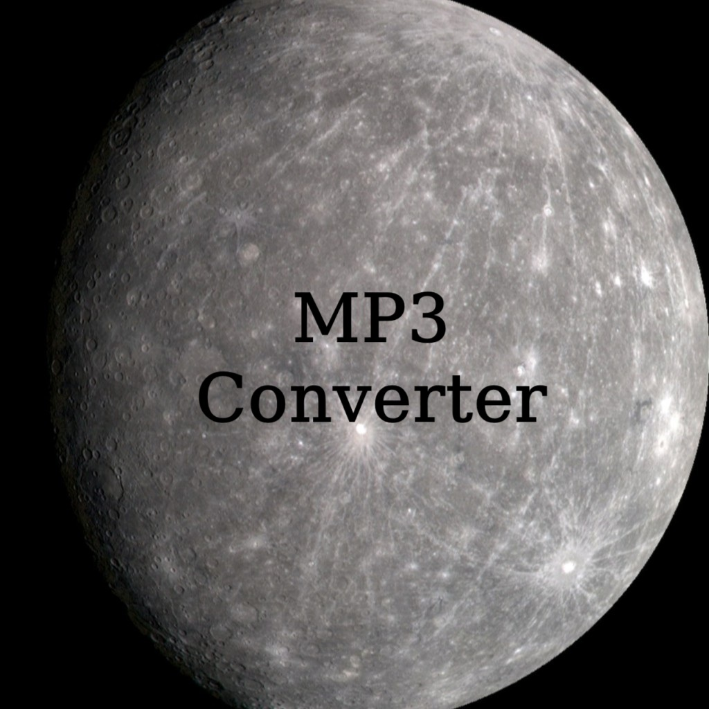

My Projects

Mercury Converter (Mobile)
A practical Android application designed to convert video links directly into MP3 format and download them to the device.
View Project →
Mercury Converter (Desktop V2)
An advanced MP3 converter developed with C++ and Qt Framework. Features include metadata embedding, cover art injection, and multi-language support.
View Project →
Mercury Digital (Logic Mod)
A Java-based Minecraft mod that introduces custom redstone logic gates, bridge blocks, and flip-flops. Published on Modrinth and CurseForge.
View Project →
MercuryShell
A Windows CLI simulation written in C. Features recursive directory searching, function pointers, and command auto-correction using Levenshtein distance.
View Project →
MercuryMusic
A Java-based Android music player. Utilizes MediaStore API integration to scan local audio files and provides custom media controls.
View Project →
MercuryTank
An Arduino-based liquid level monitoring system developed in C/C++. Integrates an ultrasonic sensor, EMA filtering algorithm, and an I2C LCD display.
View Project →
Slope Analyzer
A practical tool designed to accurately measure and calculate surface inclines and angles.
View Project →